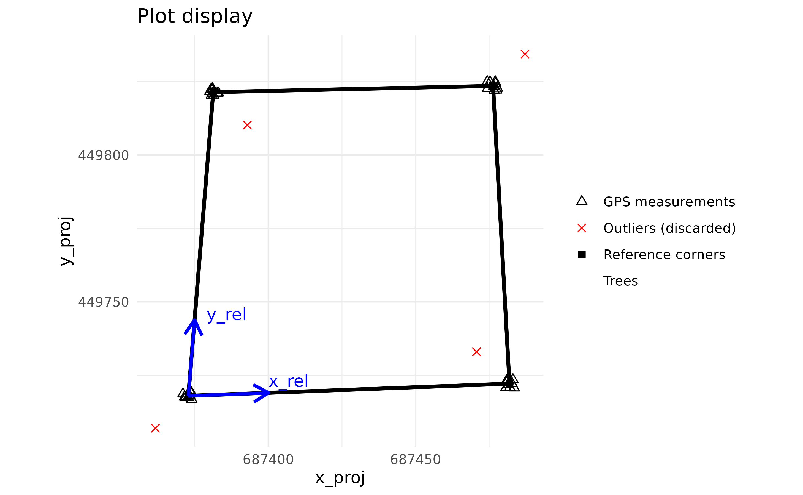
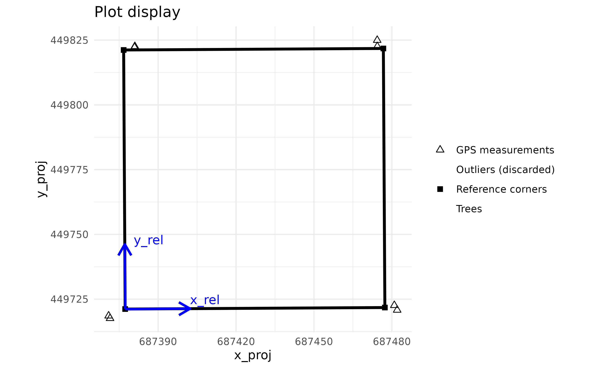
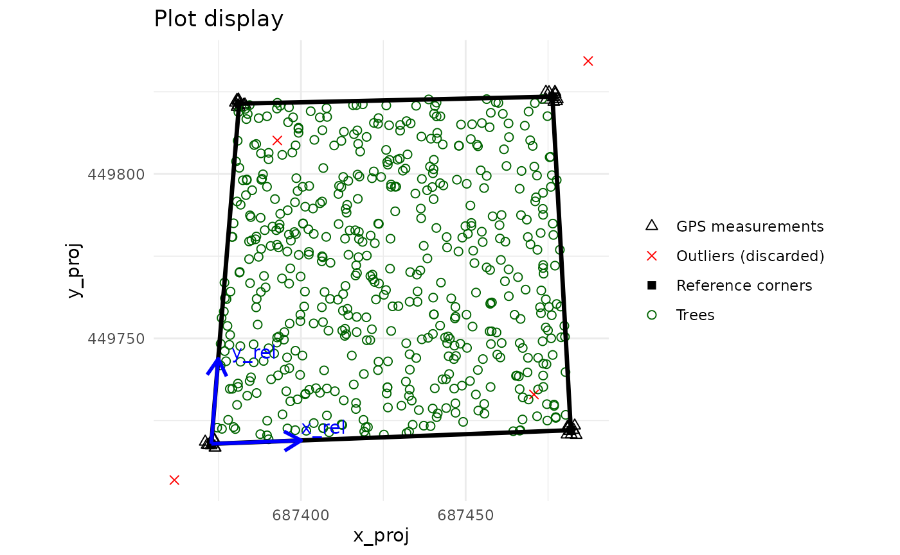
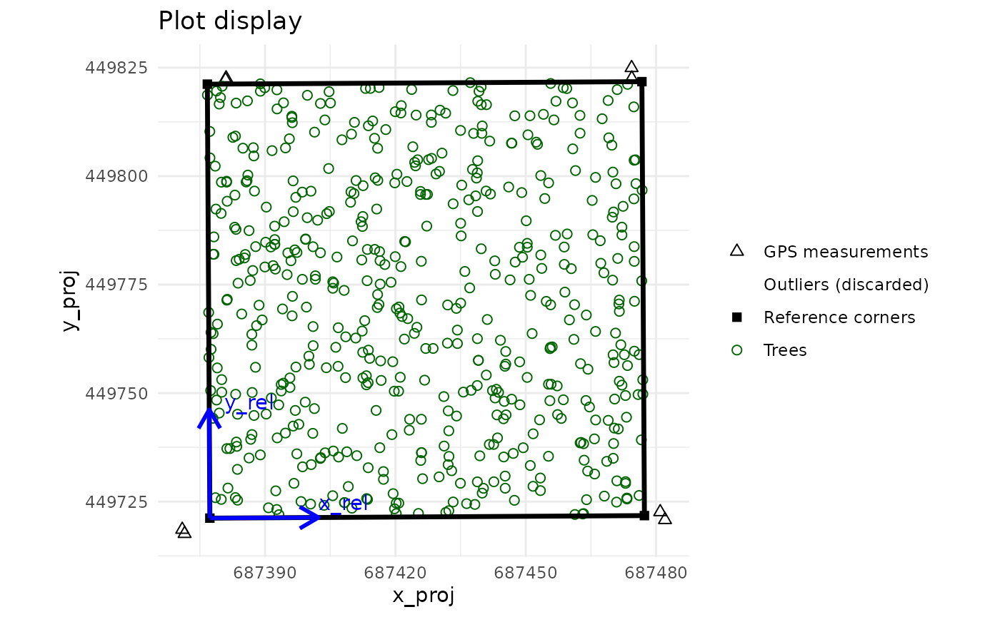
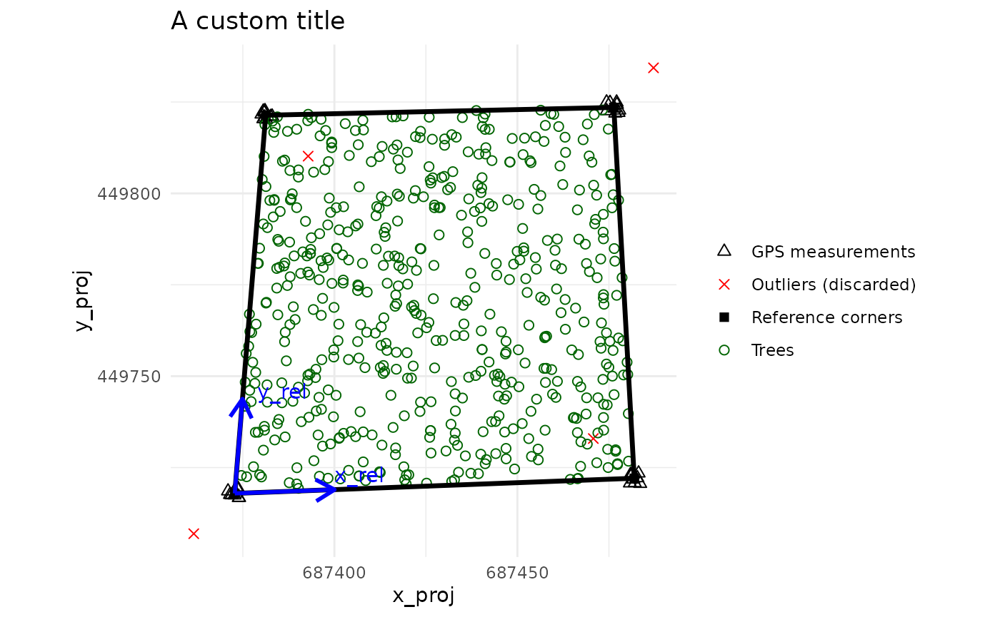

Spatialized trees and forest stands metrics with BIOMASS
Arthur Bailly
2024-11-18
Source:vignettes/Vignette_spatialized_trees_and_forest_stands_metrics.Rmd
Vignette_spatialized_trees_and_forest_stands_metrics.Rmd/!\ VIGNETTE IN PROGRESS /!\
Overview
BIOMASS enables users to manage their plots by :
calculating the projected/geographic coordinates of the plot’s corners and trees from the relative coordinates (or local coordinates, ie, those of the field)
visualizing the plots
validating plot’s corner and tree coordinates with LiDAR data
dividing plots into subplots
summarizing the desired information at subplot level
Required data
Two data frames are required for the rest :
- a data frame of corner coordinates, containing at
least :
- the name of the plots if there are several plots
- the coordinates of the plot’s corners in the geographic or projected coordinate system (the GPS coordinates or another projected coordinates)
- the coordinates of the plot’s corners in the relative coordinate system (the local or field coordinates)
In this vignette, we will use the Nouragues dataset as an exemple :
corner_coord <- read.csv(system.file("external", "Coord.csv",package = "BIOMASS", mustWork = TRUE))
kable(head(corner_coord), digits = 5, row.names = FALSE, caption = "Head of the table corner_coord")| Plot | Corners | Lat | Long | xRel | yRel | xProj | yProj |
|---|---|---|---|---|---|---|---|
| NB1 | NB1_SE | 4.06692 | 52.68883 | 100 | 0 | 687482.0 | 449720.8 |
| NB1 | NB1_SE | 4.06694 | 52.68883 | 100 | 0 | 687480.9 | 449722.6 |
| NB1 | NB1_SE | 4.06694 | 52.68884 | 100 | 0 | 687482.8 | 449722.2 |
| NB1 | NB1_SE | 4.06692 | 52.68882 | 100 | 0 | 687480.7 | 449720.7 |
| NB1 | NB1_SE | 4.06695 | 52.68883 | 100 | 0 | 687481.5 | 449723.5 |
| NB1 | NB1_SE | 4.06695 | 52.68884 | 100 | 0 | 687483.1 | 449723.5 |
Note that both Lat/Long and xProj/yProj coordinates are included in this dataset but only one of these coordinate systems is needed.
- a data frame of trees coordinates, containing at
least :
- the name of the plots if there are several plots
- the tree coordinates in the relative coordinate system (the local/field one)
- the desired information about trees, such as diameter, wood density, height, etc. (see BIOMASS vignette)
trees <- read.csv(system.file("external", "NouraguesPlot.csv",package = "BIOMASS", mustWork = TRUE))
kable(head(trees), digits = 3, row.names = FALSE, caption = "Head of the table trees")| plot | xRel | yRel | D | WD | H |
|---|---|---|---|---|---|
| NB1 | 1.30 | 4.7 | 11.459 | 0.643 | 12 |
| NB1 | 2.65 | 4.3 | 11.618 | 0.580 | 16 |
| NB1 | 4.20 | 6.9 | 83.875 | 0.591 | 40 |
| NB1 | 5.90 | 4.7 | 14.961 | 0.568 | 18 |
| NB1 | 6.40 | 4.1 | 36.765 | 0.530 | 27 |
| NB1 | 13.50 | 2.3 | 13.528 | 0.409 | 20 |
Checking plot’s coordinates
The user is faced with two situations :
The GPS coordinates of the plot corners are considered very accurate or enough measurements have been made to be confident in the accuracy of their mean. In this case, the shape of the plot measured on the field will follow the GPS coordinates of the plot corners when projected into the projected/geographic coordinate system. See 3.1.1
Too few measurements of the GPS coordinates of plot corners have been taken and/or are not reliable. In this case, the shape of the plot measured on the field is considered to be accurate and the GPS corner coordinates will be recalculated to fit the shape and dimensions of the plot (the projected coordinates fit the relative coordinates). See 3.1.2
In both case, the use of the check_plot_coord() function
is recommended as a first step.
Checking the corners of the plot
The check_plot_coord() function handles both situations
using the trust_GPS_corners argument (= TRUE or FALSE).
You can give either GPS coordinates (with the longlat argument) or another projected coordinates (with the proj_coord argument) for the corner coordinates.
If we rely on the GPS coordinates of the corners
If enough coordinates have been recorded for each
corner (for more information, see the CEOS
good practices protocol, section A.1.3.1 ), you will need to provide
the corner names via the corner_ID argument. In this case,
each coordinates will be averaging by corner, resulting in 4 reference
coordinates. The function can also detect and remove GPS outliers using
the rm_outliers and max_dist arguments.
If only 4 GPS measurements have been taken with a high degree of accuracy (by a geometer, for example), or if you already have averaged your measurements by yourself, you can supply these 4 GPS coordinates to the function.
check_plot_trust_GPS <- check_plot_coord(
longlat = corner_coord[c("Long", "Lat")],
# Or, if exists : proj_coord = corner_coord[c("xProj", "yProj")],
rel_coord = corner_coord[c("xRel", "yRel")],
trust_GPS_corners = T, corner_ID = corner_coord$Corners,
draw_plot = TRUE,
max_dist = 10, rm_outliers = TRUE )
#> Loading required namespace: proj4
The two blue arrows represent the relative coordinate system when projected into the projected coordinate system.
If we rely on the shape of the plot measured on the field
Let’s degrade the data to simulate the fact that we only have 8 GPS coordinates that we don’t trust.
degraded_corner_coord <- corner_coord[c(1:2,11:12,21:22,31:32),]
check_plot_trust_field <- check_plot_coord(
longlat = degraded_corner_coord[, c("Long", "Lat")],
# OR proj_coord = corner_coord[c("xProj", "yProj")],
rel_coord = degraded_corner_coord[, c("xRel", "yRel")],
trust_GPS_corners = F,
draw_plot = TRUE )
We can see that the corners of the plot do not correspond to the GPS measurements. In fact, they correspond to the best compromise between the shape and dimensions of the plot and the GPS measurements.
Tree coordinates in the projected/geographic coordinate system
Tree coordinates are almost always measured in the relative
(local/field) coordinate system. To retrieve them in the projected
system, you can supply their relative coordinates using the
tree_df and tree_coords arguments.
check_plot_trust_GPS <- check_plot_coord(
longlat = corner_coord[c("Long", "Lat")],
# OR proj_coord = corner_coord[c("xProj", "yProj")],
rel_coord = corner_coord[c("xRel", "yRel")],
trust_GPS_corners = T, corner_ID = corner_coord$Corners,
draw_plot = TRUE,
max_dist = 10, rm_outliers = TRUE,
tree_df = trees, tree_coords = c("xRel","yRel") )
check_plot_trust_field <- check_plot_coord(
longlat = degraded_corner_coord[, c("Long", "Lat")],
# OR proj_coord = corner_coord[c("xProj", "yProj")],
rel_coord = degraded_corner_coord[, c("xRel", "yRel")],
trust_GPS_corners = F,
draw_plot = TRUE,
tree_df = trees, tree_coords = c("xRel","yRel") )
Note the difference in corner and tree positions between the two situations.
The tree coordinates can be obtained via the
$tree_proj_coord output.
You can also grep and modify the plot via the
$plot_design output which is a ggplot object. For example,
to change the plot title :
plot_to_change <- check_plot_trust_GPS$plot_design
plot_to_change <- plot_to_change + ggtitle("A custom title")
plot_to_change
If you want to retrieve the GPS coordinates of the trees in a longitude/latitude format, see this line of code:
tree_GPS_coord <- as.data.frame( proj4::project(check_plot_trust_GPS$tree_proj_coord, proj = check_plot_trust_GPS$UTM_code, inverse = TRUE) )Dividing plots
Dividing plots into several rectangular sub-plots is performed using
the divide_plot() function. This function takes the
relative coordinates of the 4 corners of the plot to divide it into a
grid (be aware that the plot must be rectangular in the relative
coordinates system, ie, have 4 right angles) :
subplots <- divide_plot(
rel_coord = check_plot_trust_GPS$corner_coord[c("x_rel","y_rel")],
proj_coord = check_plot_trust_GPS$corner_coord[c("x_proj","y_proj")],
grid_size = 25 # or c(25,25)
)
kable(head(subplots, 10), digits = 1, row.names = FALSE, caption = "Head of the divide_plot() returns")| subplot_id | x_rel | y_rel | x_proj | y_proj |
|---|---|---|---|---|
| subplot_0_0 | 0 | 0 | 687372.8 | 449717.9 |
| subplot_0_0 | 25 | 0 | 687400.1 | 449719.0 |
| subplot_0_0 | 25 | 25 | 687401.3 | 449744.7 |
| subplot_0_0 | 0 | 25 | 687374.9 | 449743.8 |
| subplot_1_0 | 25 | 0 | 687400.1 | 449719.0 |
| subplot_1_0 | 50 | 0 | 687427.4 | 449720.0 |
| subplot_1_0 | 50 | 25 | 687427.7 | 449745.6 |
| subplot_1_0 | 25 | 25 | 687401.3 | 449744.7 |
| subplot_2_0 | 50 | 0 | 687427.4 | 449720.0 |
| subplot_2_0 | 75 | 0 | 687454.6 | 449721.0 |
If you don’t have any projected coordinates, just let
proj_coord = NULL.
For the purposes of summarizing and representing subplots (coming in
the next section), the function returns the coordinates of subplot
corners but can also assign to each tree its subplot
with the tree_df and tree_coords
arguments :
subplots <- divide_plot(
rel_coord = check_plot_trust_GPS$corner_coord[c("x_rel","y_rel")],
proj_coord = check_plot_trust_GPS$corner_coord[c("x_proj","y_proj")],
grid_size = 25, # or c(50,50)
tree_df = trees, tree_coords = c("xRel","yRel")
)The function now returns a list containing :
sub_corner_coord: coordinates of subplot corners as previouslytree_df: the tree data-frame with the subplot_id added in last column
kable(head(subplots$tree_df), digits = 1, row.names = FALSE, caption = "Head of the divide_plot()$tree_df returns")| plot | xRel | yRel | D | WD | H | subplot_id |
|---|---|---|---|---|---|---|
| NB1 | 1.3 | 4.7 | 11.5 | 0.6 | 12 | subplot_0_0 |
| NB1 | 2.6 | 4.3 | 11.6 | 0.6 | 16 | subplot_0_0 |
| NB1 | 4.2 | 6.9 | 83.9 | 0.6 | 40 | subplot_0_0 |
| NB1 | 5.9 | 4.7 | 15.0 | 0.6 | 18 | subplot_0_0 |
| NB1 | 6.4 | 4.1 | 36.8 | 0.5 | 27 | subplot_0_0 |
| NB1 | 13.5 | 2.3 | 13.5 | 0.4 | 20 | subplot_0_0 |
The function can handle as many plots as you wish, using the
corner_plot_ID and tree_plot_ID arguments
:
multiple_plots <- rbind(check_plot_trust_GPS$corner_coord[c("x_rel","y_rel","x_proj","y_proj")], check_plot_trust_GPS$corner_coord[c("x_rel","y_rel","x_proj","y_proj")])
multiple_plots$plot_ID = rep(c("NB1","NB2"),e=4)
multiple_trees <- rbind(trees,trees)
multiple_trees$plot = rep(c("NB1","NB2"),e=nrow(trees))
multiple_subplots <- divide_plot(
rel_coord = multiple_plots[c("x_rel","y_rel")],
proj_coord = multiple_plots[c("x_proj","y_proj")],
grid_size = 50,
corner_plot_ID = multiple_plots$plot_ID,
tree_coord = multiple_trees,
tree_plot_ID = multiple_trees$plot
)